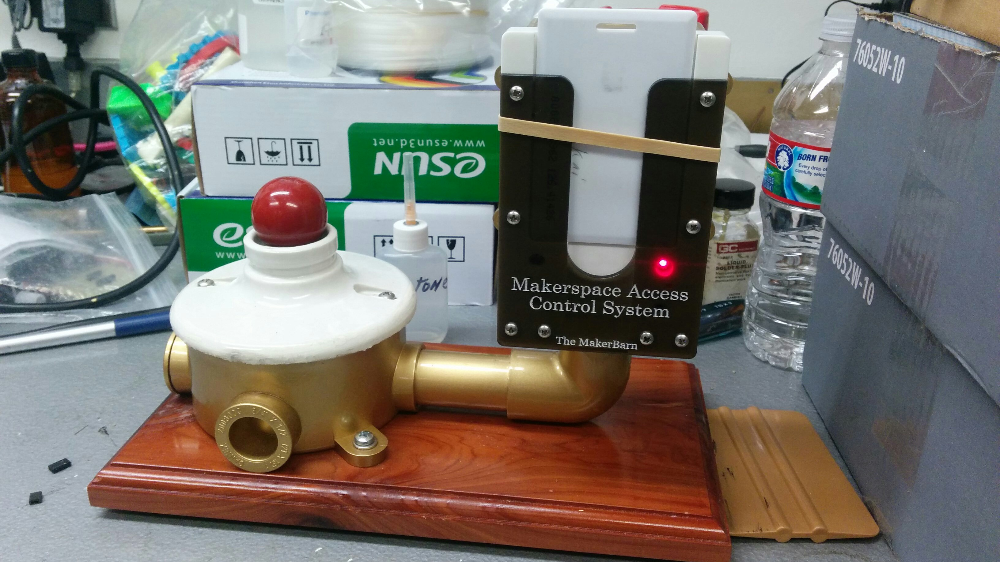
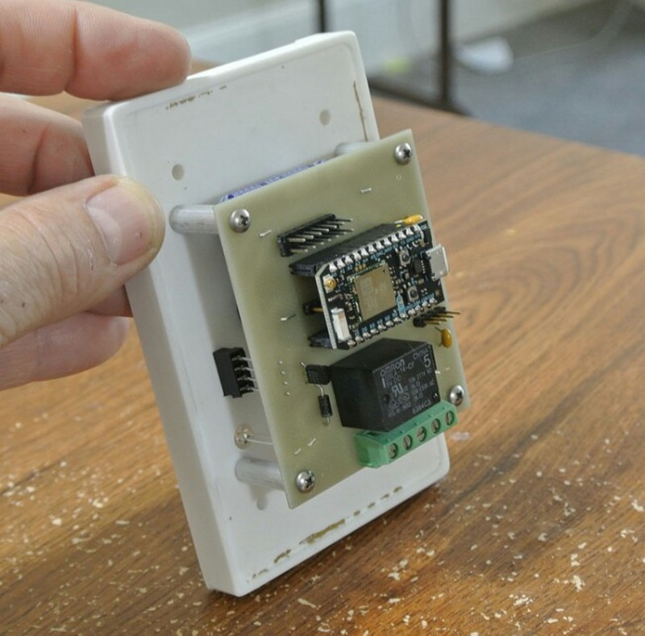
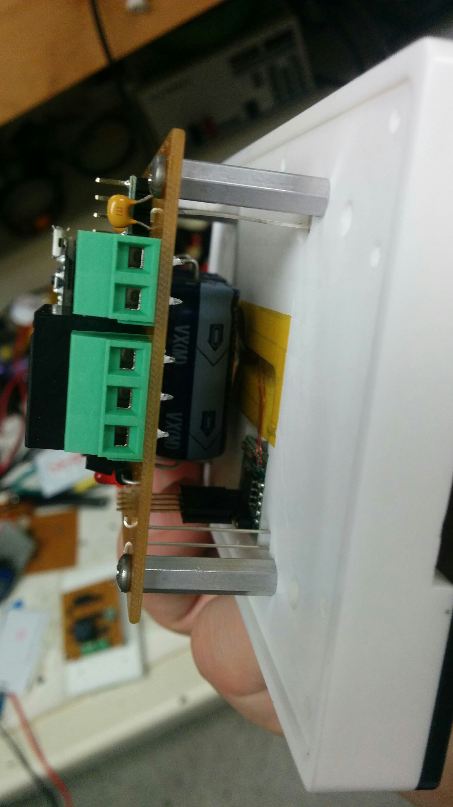
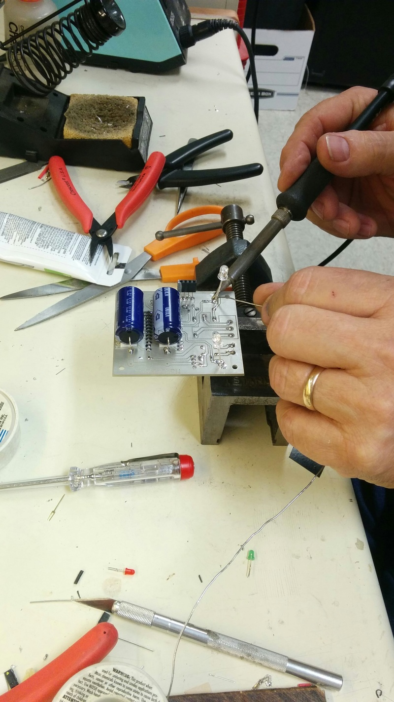
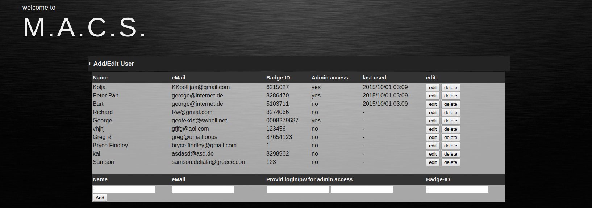
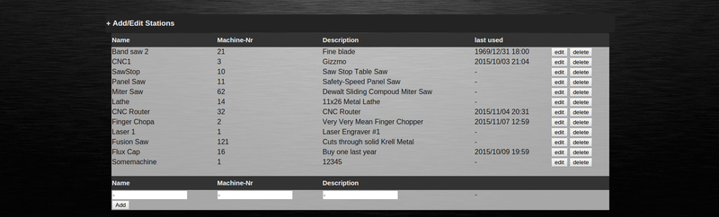
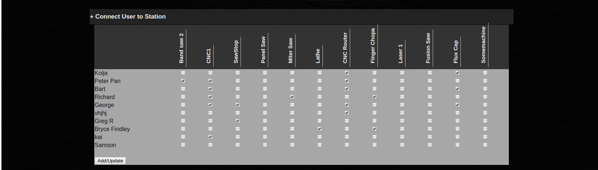
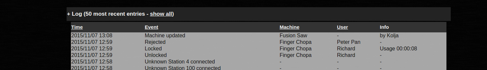

Welcome to the GitHub Page of the M.A.C.S. Project
This project contains the firmware, software and pcb documents used for our new Makerspace in Houston Texas.
A makerspace shall be a place to enable everyone to realize everything they are dreaming about, but it is also a dangerous place. A simple table-saw can be a outstanding tool if one knows how to
use it, but it's also a very dangerous tool if one hasn't received the proper training. The intention of the M.A.C.S. is to limit the access to those members who are able to use the tools.

Components
The M.A.C.S. consists of a central server, responsible to provide a nice little GUI to the admin and a variable number of units to control the access on the machine. The control units are connected to the server via WiFi so that no cables are needed.
Units
The Units are based on the Particle Photon, a C++ programmable, WiFi-enabled controler. Each unit is identified over a customizable hardware id in the range of 1-127. Each unit
is equipped with a RFID reader coil to read the ID of an inserted card.
The firmware for those modules is available inside the Git-Project in the "Firmware" folder at https://github.com/KoljaWindeler/macs/tree/master/firmware.
The on-board relay can be used to connect any kind of control circuit to enable / disable the machine in control.

Power can be supplied as AC or DC in the range of 6 to 32V. Therefor the unit can be powered by the most common 24VAC circuits inside a router/lathe.

The PCB can be self-made on only one layer, the current version is available at https://github.com/KoljaWindeler/macs/tree/master/pcb

This demo unit shows a rejected card (red led on)
The total BOM will be added as soon as the unit have been tested. The target total cost for the components per station shall be around $50.
The front panel is self milled and can not be ordered, sry.
Server
We've decided to take a simple Raspberry Pi as server to have a high amount of flexibility but keeping the cost, power consumption and space low at the same time.
Any other hardware could be used as the requirement for the server is only a MySQL, PHP, Ngnix combination to serve as GUI for the administration.
The GUI consists of four sections.
The first section is used to display add and modify the registered user. The connection between the RFID Card ID and the name of the member is made in this section.

The second section is used to setup all available machine units. Each machine has a hardware id 1-127 which is assigned to a machine name in the part of the GUI

The third section is the most important one. The administrator can give or revoce the access rights to the user

The last section shows all recent activities. Log entries are created for each interaction, e.g. Unlock a Unit, lock it again, access rejected, updates per station, ..

All PHP pages, required to setup a server are inside the folder "website" in the git project at https://github.com/KoljaWindeler/macs/tree/master/website.
A demo page to play around is (for now) available at here.
Project status
- 2015/11 - M.A.C.S. will be shown at the Maker Fair in Houston
- 2015/11 - Webinterface running, three fully assembled units ready for beta testing
- 2015/10 - First prototype on breadboards
- 2015/09 - Project start, components ordered
Project copy / contribution
Everyone is welcome to copy this project and improve the content. Send me a mail if you have questions